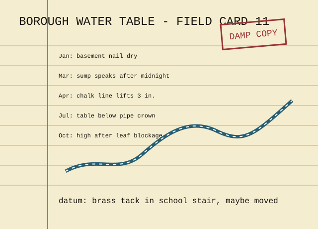

The water table is filed as a table because it rises under chairs first. Official measurements use feet below datum; unofficial measurements use whether the basement matches a shoe.
Clerk's correction: the brass tack in the school stair was replaced after the winter pageant. Subtract 1.5 inches from cards after 1962 unless the handwriting is green.
Wall evidence: basement flood marks retained by order.